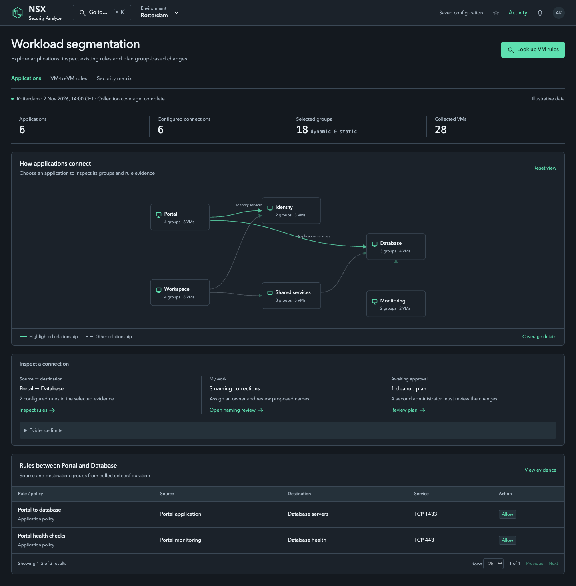
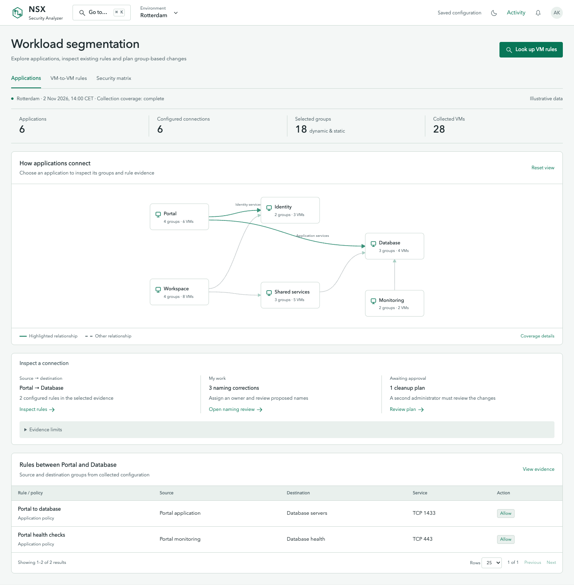
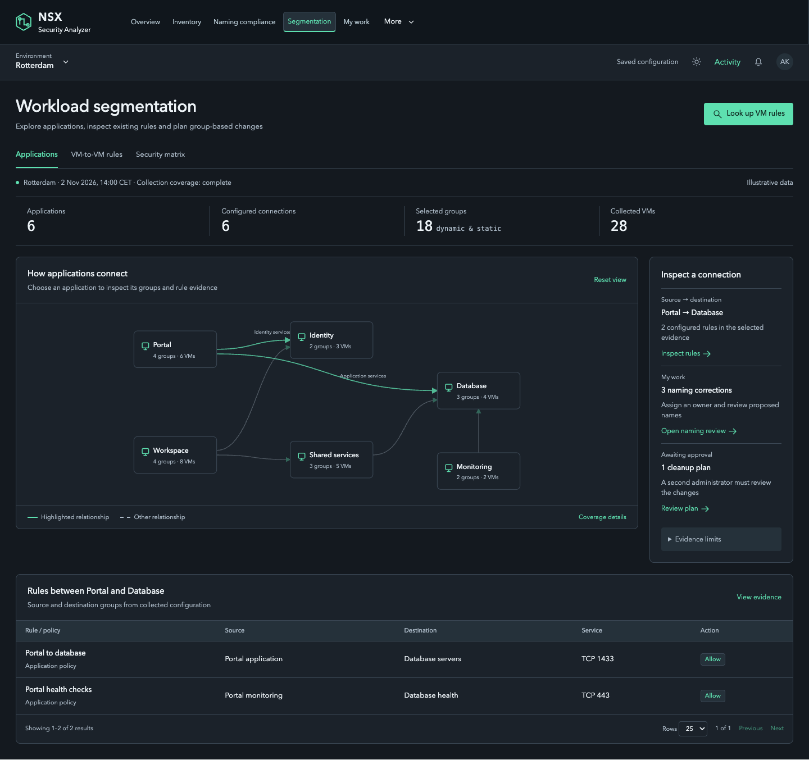
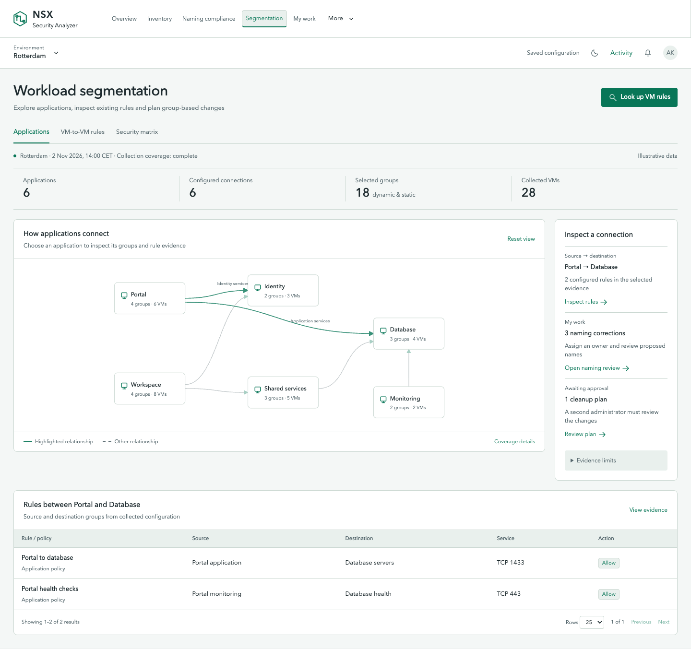
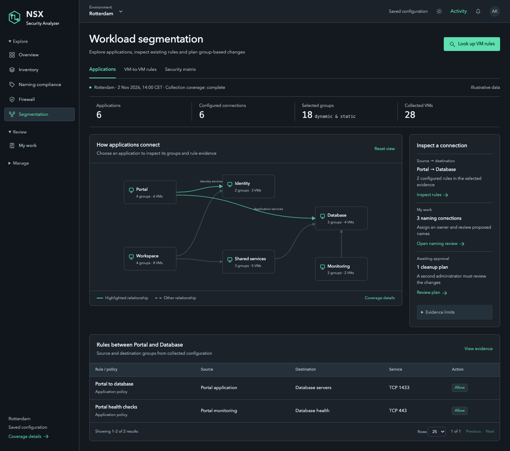
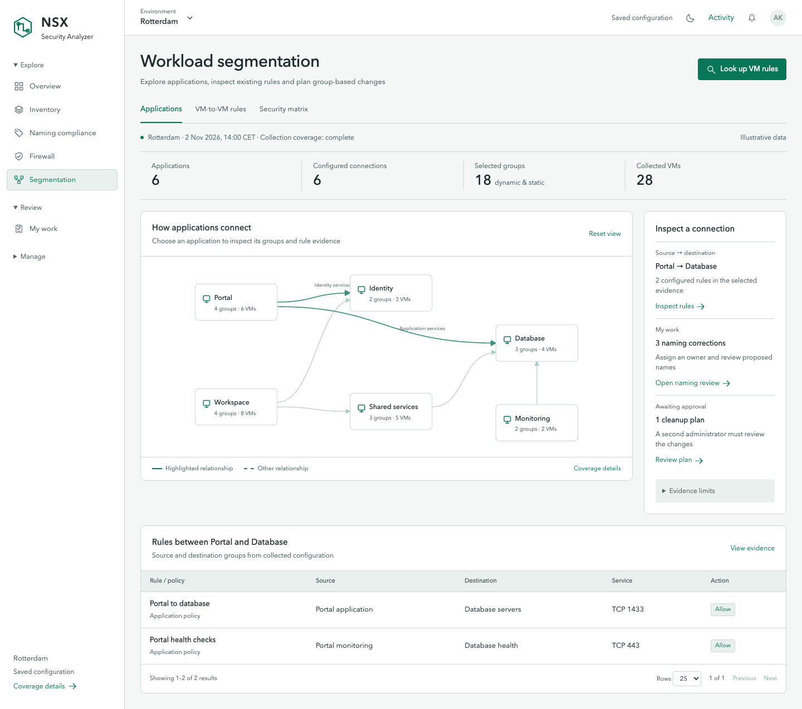
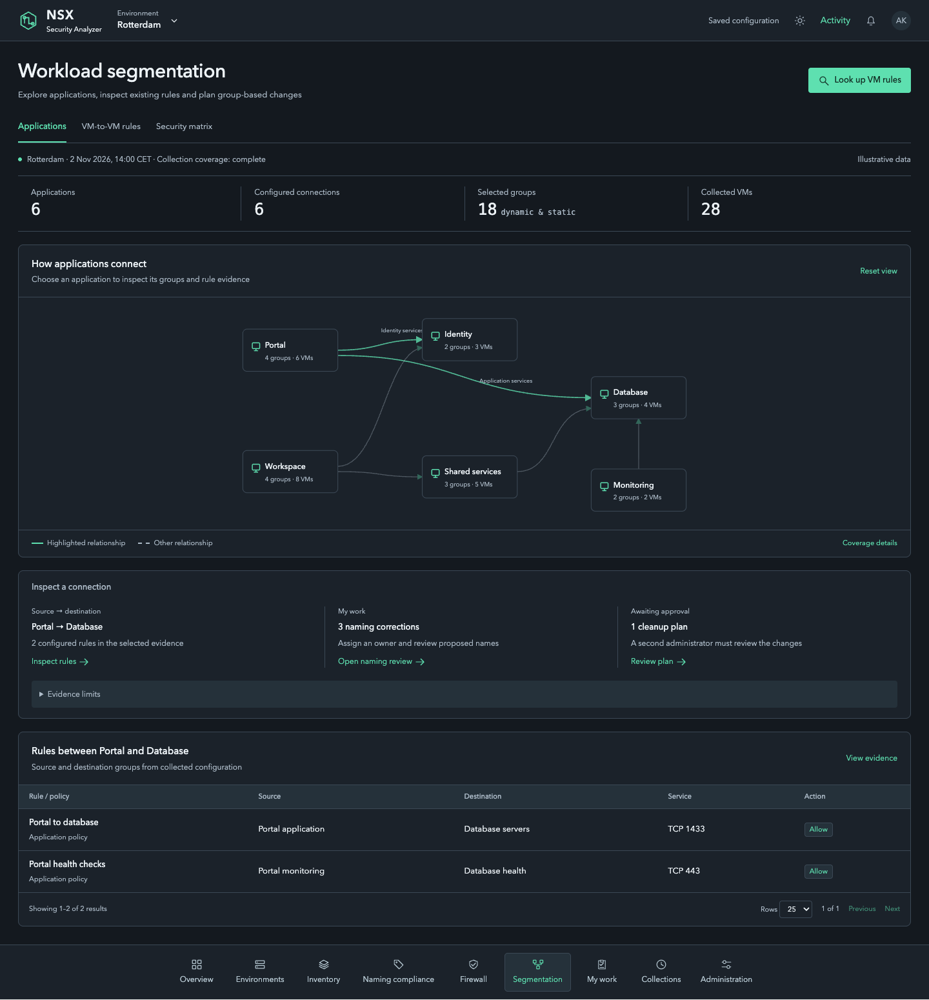
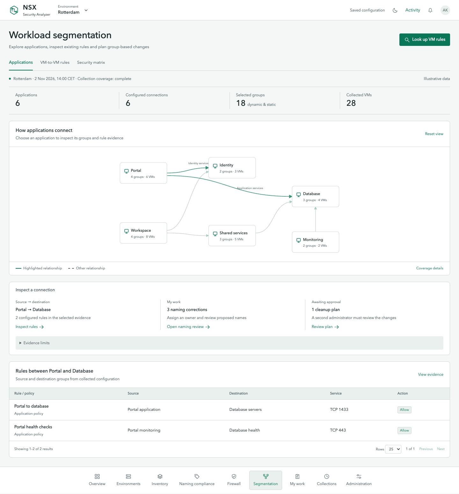
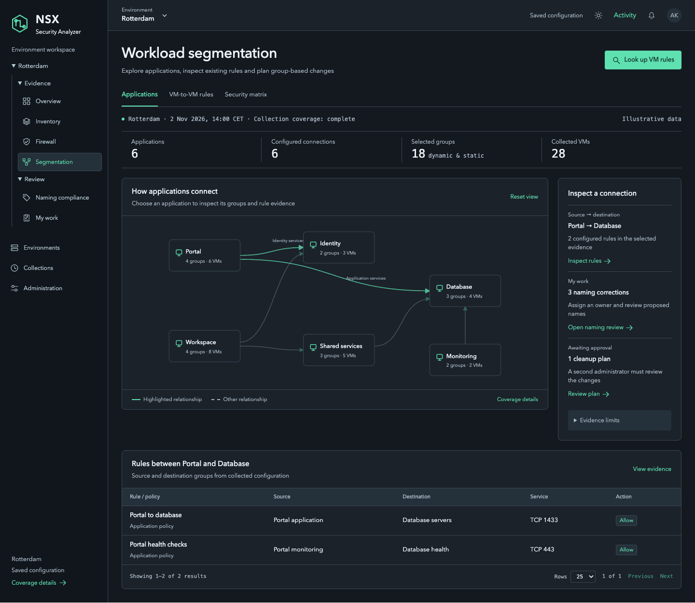
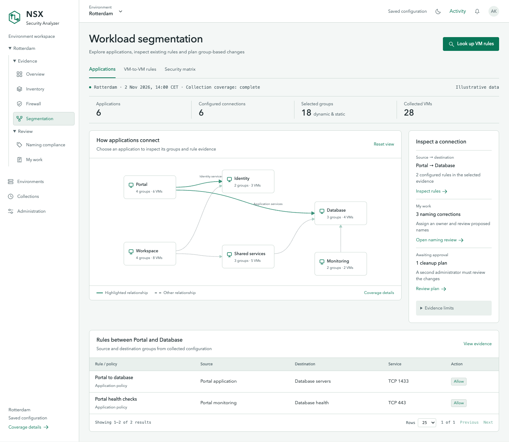

06. Command workspace
A quiet header and a searchable Go to menu.

Dark mode · Same menu, same evidence
Light mode · Same menu, same evidenceRelay identity · Five menu alternatives, each in dark and light mode · Interactive chooser · Compare any two
A quiet header and a searchable Go to menu.

Dark mode · Same menu, same evidence
Light mode · Same menu, same evidenceFrequent modules stay visible; secondary modules move to More.

Dark mode · Same menu, same evidence
Light mode · Same menu, same evidenceExplore, Review and Manage expand within the left menu.

Dark mode · Same menu, same evidence
Light mode · Same menu, same evidenceA labeled module dock sits below the workspace.

Dark mode · Same menu, same evidence
Light mode · Same menu, same evidenceA contextual tree shows environment, evidence and review destinations.

Dark mode · Same menu, same evidence
Light mode · Same menu, same evidence